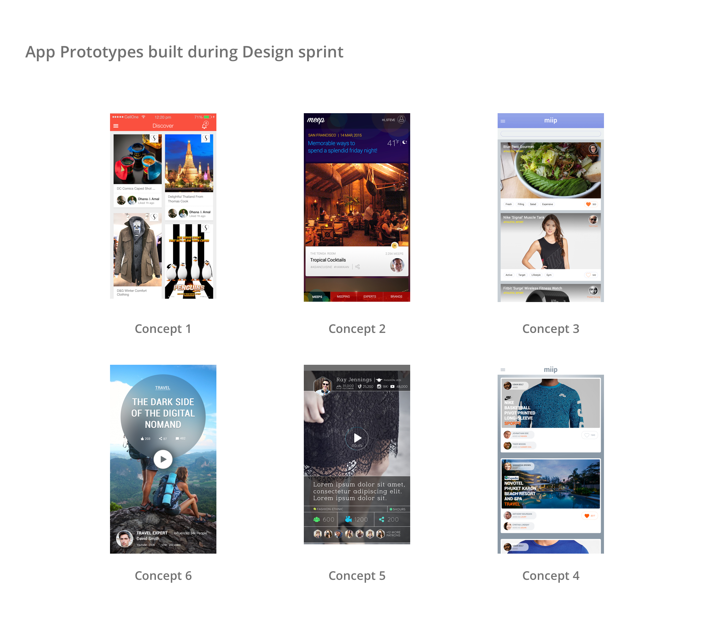
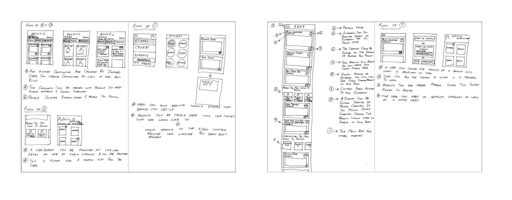
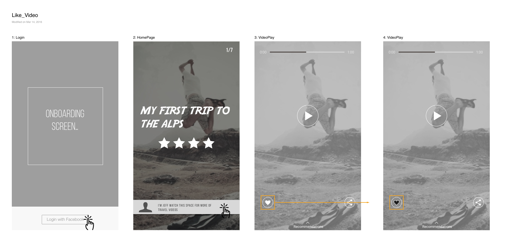
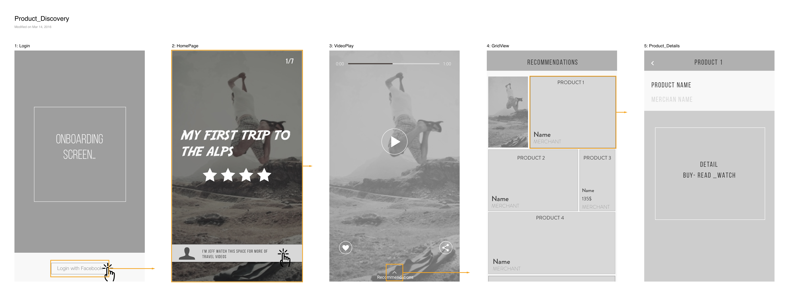
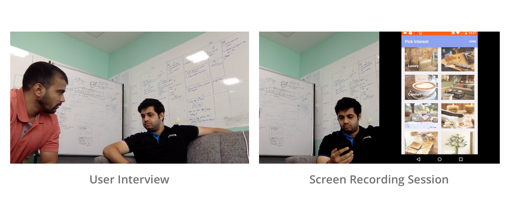

Inmobi - Video Discovery App
Re-Imagining Video App Experience
Vision & Goal
To introduce a powerful new way of Commerce Discovery system for Millennials.
Problems today
- Conventional ways of intent based shopping does not lead to better discovery
- User's trust on ads have dwindled
Target Users and Behavior
. Ask for friends advice
. They are unfazed by ads.
. Users pass recommendations
. They don’t mind sharing online space with brands
. They believe brands are more trustworthy in shared medium
. Easy money will not change their buying behavior.
. Users value authenticity.
Solution
The core of the App would be to provide “Opinions on things that matter from people who matter”. The app would help users discover products through influencers. Influencers would be experts in their on field. Influencer would recommend products through videos and the videos will be more one minute high definition. The videos would be snackable and limited (only 7 videos for a day).
Opinions
In the form of videosPeople
who would drive the discovery they could be "Experts" or “Friends”.Products
It could apply for any product from a nike shoe to a travel experienceMy Role
Moderator for the Design sprint - Taking decisions and Presenting ideas to CEO - Designing the wireframe, visual design and user testing to validate the concept - Leading a three member design team.
Design Process
Journey
- Ten Concepts of the app built - Tested with 100 Users over a perios of a year
Methodology
I used the google sprint method for this project. I used this method because in this project we had to simultaneously bring in business, design, technology and user testing together to validate the idea.
Monday - Brainstorm the areas of focus and ideas to be built
Tuesday - Sketching and wireframe
Wednesday - Make decisions to turn idea into hypothesis
Thursday - High Fidelity Prototype
Friday - Testing with 5 users to get feedback.
Weekend - Analyse the feedback and use as input for the next session.


Phase 2
Having iterated on 12 different concepts we decided on the Opinion concept. Next step was to conme up with quick prototpyes for this concept. We finalised on the OPINION variant.
Final Concept
Video Only Opinions Full screen portrait video - We also knew for the fact that Portrait videos are more engaging, we thought why not have a complete portrait video experience instead of a landscape video, partly because portrait is purely engaging and not many have done it. This screen below shown was the first variant we tried which was completely a video experience. Once we built it we wanted to test how users receive the app, so we conducted a user testing session with user.
Key Tasks and Goals
•Help Users Discover Expert Videos Content
•These videos will be available at 7 Pm everyday
•Really focus on the video content.
•Based on the videos, users will see related high quality content
•Users will be able to save and share a video.
•There will be a profile section to access these section.
Design Principles
I defined three design principles to make sure we take the right design decisions. Also, to bring a sense of prioritization for the things that we do.
• Bold and Graphical
• Quality over Quantity
• Delightful Engaging Experience
SKetching and WIrframes
O
Mid Fidelity WIreframes
After brainstorming and sketching our design we decided on the direction that we wanted to take, Since video was out primary USP . We wanted to give the best experience for the users to we took a bold move of opening the app to a full screen edge to edge portrait video.



Visual Designs
Our target users were definitely between the age group of 18 - 25. So our visual language had to be bold and graphical. Which meant we rely on typography and engaging video. SImply put we wanted the content to take the front seat and users had to take minimum effort in interaction with the app.
Visual Design Iteration 1

Visual Design Iteration 2

User Testing
Testing was a weekly effort were we invited college student to be part of the sessions. It was mostly iterative testing were post sessions we would quickly gather for a brainstorming session to collect all the stakeholders feedback to and decide on the next set of actions. 
Next Steps
Currently the app has been shelved due to business reasons.